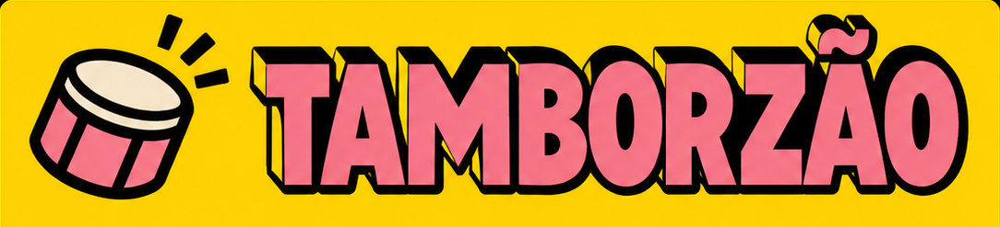

PRESETS
KIT
ALGORITHM
TRILHA
Gire os controles com − / +.
Selecione uma trilha e toque nos passos.
01 — PRESETS

Tamborzão
Kit originalPreparando o instrumento…
02 — TRILHASALGORITHM
03 — PATTERN
Bumbo
Cada tecla liga ou desliga um passo. OCT − / + troca o compasso.
As edições ficam guardadas enquanto esta página estiver aberta.